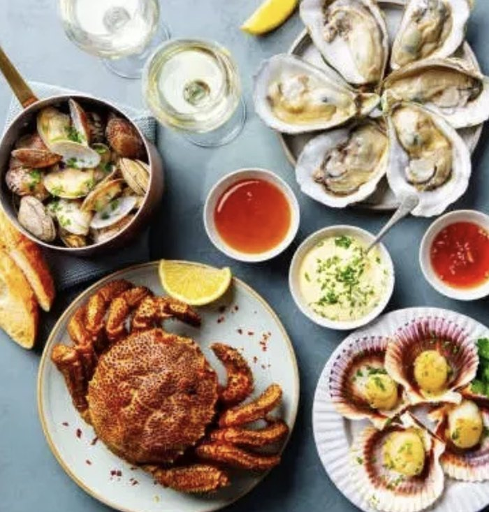
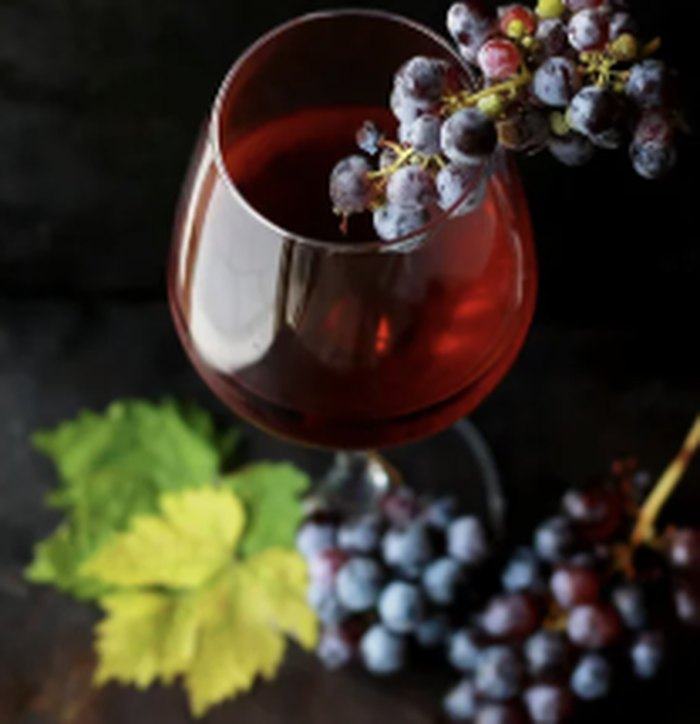
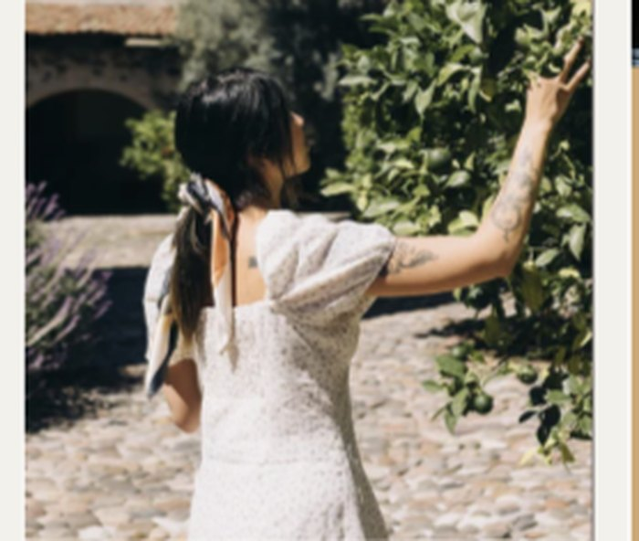
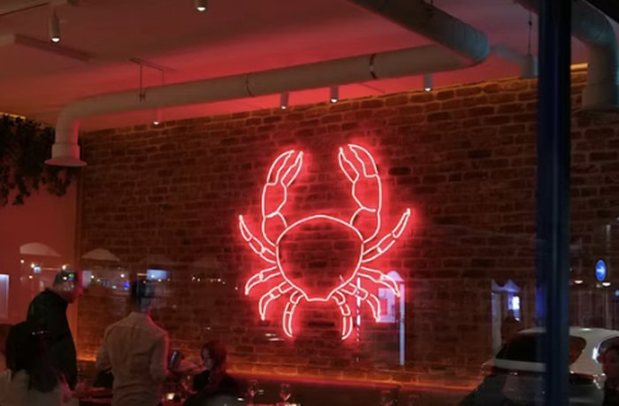

Audace poétique
Inverser la création : du vin naît le plat, dans un geste créatif qui ose bouleverser les habitudes gastronomiques.
Restaurant gastronomique · Lyon
Là où le vin écrit le menu
Une conversation culinaire dont le vin est le premier mot. Ici, la cuvée précède l'assiette : chaque plat naît d'un cépage, d'un terroir, d'un millésime.
Le Concept
Ici, la cuvée précède l'assiette. Le sommelier choisit d'abord un cépage, un terroir, un millésime — puis le chef compose autour de lui, comme on répond à une première phrase.
De cette rencontre entre la marée et la vigne naît une cuisine qui se lit comme un récit : chaque service prolonge le précédent, chaque accord ouvre le suivant. Révéler la poésie de l'alliance entre la mer et la vigne, voilà notre seule ambition.
« Une conversation culinaire dont le vin est le premier mot. »
Nos Valeurs
Inverser la création : du vin naît le plat, dans un geste créatif qui ose bouleverser les habitudes gastronomiques.
Raffinement sans rigidité, sophistication sans prétention. L'excellence se vit dans la chaleur et le partage authentique.
Pêche responsable et vignerons artisans. Chaque produit raconte son origine, du bateau au vignoble.
Chef, sommelier et client sur un pied d'égalité. Une conversation à trois voix où chacun enrichit l'expérience.
L'Expérience
Comme un livre, le repas s'ouvre, se développe, surprend, puis se referme sur un dernier mot.
Le sommelier présente le vin avant le plat.
Chaque service est annoncé comme une étape narrative.
Un accord inattendu en milieu de parcours.
Dernier verre signature, accompagné d'un mot-clé à emporter.
L'Univers




Univers visuel du concept — direction artistique issue du moodboard de marque.
Réservation
La cuvée précède l'assiette. Réservez votre table et laissez-vous porter par le récit, du premier verre au dernier mot.
Lieu
Lyon, Presqu'île
Service
Du mardi au samedi
19h — 23h